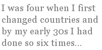

Dennis Greene
At Churchill’s Funeral
He died in January, a cold
black and white month in the north,
and yet it was in shades of grey
his flag-draped coffin
came leading the cavalcade,
with its empty-saddled horse
along Whitehall, past one-eyed
Nelson, up to St Paul’s.
We’d gathered round the box
to watch these symbols of things past
file through the camera.
(I thought the back-turned boots
meant looking back)
while outside in full colour
southern summer
turned to the coming years
and willy-willys whirred
through open spaces.
“He stemmed the tide
with words,” my father said,
“but would have left us high and dry.”
“Death is a word,” my mother said,
and closed the blinds,
out of respect for death,
the dead,
and summer sunlight
bright as knives,
used at a ritual sacrifice.
Equinox
Easter resurrections grow
cold in southern hemispheres,
waiting for stones to roll,
looking for signs of birth
in earth grown slow for winter;
we are drawn instead
to conclusions, the feeling
that something is wrong,
watching our sun slip north
towards summer solstices.
This is the autumn equinox
of the soul — we strive
for balance, dancing
on dying feet
to a vernal cadence.
This is the resurrection
and the life transposed,
exhumed, grown cold,
brought south, imposed;
dug-in, made home. Uprooted
Stonehenge
I’m building it alone, nobody cares,
my little Stonehenge by the summer sea,
my six months out of kilter harmony.
I just might burst.
I’m building it alone, nobody sees,
the sunlight falling short in summer air,
the winter solstice present but not there.
I just might burst.
I’m building it alone, nobody needs
my empty headed thoughts on capping stones;
too busy trimming plastic Christmas trees,
to busy eating winter solstice meals,
in 40 or more Celsius degrees.
I just might burst
Rope
(a meditation on the death of Atahuallpa)
If in the end he chose the baptism of rope,
what does it matter? God brushed his head
with water dipped in flame, and wrote the destiny
of stars across his forehead — the rope
around his throat became the outward
sign of inward grace, and as his face
contorted till it mirrored his acceptance
of God's will and then grew still, the fate
of nations turned.
A moment now to look at implications:
five million dead; two million more struck dumb;
the millions still to come, their faces blanked,
their obligations altered: their pantheons
of doubt and self-deceptions still at one
with God, whose kingdoms come, whose will
be done on earth as it is in heaven; whose will
be done on earth: on earth as it is in heaven.
Cultural Displacement
I must admit to being taken aback at the thought. Me an Expat? I’ve been here 23 of my 57 years. One of my two children was born here; my parents, who followed me out here to escape Mugabe’s Zimbabwe, are both buried here.
I anticipate ending my days here myself. I have become so immersed in my adopted country that not only do I barrack for an Australian Rules football club (a game not unlike American football in that it is little played outside its country of origin) but when Australia meets Zimbabwe in cricket or
rugby I’m a one-eyed Australia supporter. I am aware of no hankering for what Housman called “the land of lost content”, no hankering for the “happy highways”. I have no wish to move anywhere.
Family history may have something to do with that. By birth I’m an
Englishman, by upbringing Rhodesian, by ethnicity Irish/English/French,
historically British colonial, by family inclination and force of
circumstance nomadic. I am only English because my parents stopped off for five
years on their way from the end of colonial rule in India to its temporary
continuance in Rhodesia. Realpolitik has long been a factor in my life.
I was four when I first changed countries and by my early 30s I had done so
six times, eventually washing ashore on the long beaches of Western
Australia where I remain to this day.
So in a sense I am the ultimate expat, a foreigner even in the land of my
birth, and with the land of my upbringing so changed as to be
unrecognizable. Under the circumstances it is hardly surprising that I have
assumed local colour to the point where to the casual observer I am local.
But, that said, there is one dimension of being an Australian that escapes
me and I suspect always will. I am like the man who comes late to the
party, able to hold his own in the moment, just as long as the discussion
doesn’t switch to events that occurred prior to his arrival. He knows the
history but everyone else is discussing the myths. Just as Americans see
themselves as repositories of the world’s freedom, and the French of the
world’s Culture, Australians have cornered the market in mateship and the
fair go. None of them is wrong in the first instance. Americans undoubtedly
enjoy their freedom, the French are highly cultured and Australians have a
strong sense of equality and justice, but none of these things is unique to
anyone. I of course have my own set of myths, what’s left of them after the
Zimbabwe War of Independence reduced them to tatters. They are just not
relevant to the current party.
So yes, despite my initial protests, despite my local colour, despite my
long years here, I am still, at the core, an expat. But do I write expat
poetry? Well it seems to me an expat poet can do one of four things. He can
write the poetry of yearning (Browning’s “Home thoughts from abroad” and
Brook’s “Grantchester” come to mind), or he can use the distance afforded by
foreign domicile to take the home country to task as Shelley does in
“England in 1819” and Auden in “September 1st 1939”). His third choice is
to let the foreign culture in as Flecker does in “The Golden Journey to
Samarkand” (and for that matter Eliot does with his use of a surreal London
in “The Wasteland”. It’s hard to think what the poem would be like if he’d
stayed in Missouri). Finally our poet can ignore the dichotomy inherent in
his situation and let his subconscious bring to the surface what it will,
when it will.
I tend to the latter, and what my subconscious brings to the surface is
little tangled parcels of cultural displacement. Cultural displacement (as I
use the phrase) is what happens when you take the culture of one place and
superimpose it on another. It is not directly an expat issue as it crosses
generation boundaries and affects people in their millions rather than
singly It is to being an expat what being the QE II is to being a dinghy.
Its most powerful manifestation is living in the southern hemisphere to the
rhythms of a northern hemisphere culture. But even intra-hemisphere it
makes its presence felt. I’m pretty sure I detected its familiar sense of
unease in John McCutcheon’s 1912 short story “Injun Summer”. Just as
gravity is so powerful it holds the moon in place yet is so weak that we
overcome it every time we take a step so too is cultural displacement both
strong and weak. Strong enough that it has shaped, and continues to shape,
our world. So weak that any one of us can resist its urgings. It is a
fascinating subject, and one my subconscious often returns me to.
Thirty-five years ago I wrote “Beloved Land I wish that I could say / that my
forefather’s blood enriched your soil”. That was the last time I wrote an
expat poem. Since then my subconscious has worked and reworked the material
into a heightened awareness of cultural displacement. I think I am the
stronger for it.
Dennis Greene lives in Perth, Western Australia. His work has appeared in Unfamiliar Tides, Empowa issue one, Empowa issue two (in which he was the featured poet), Westerly, Inside Out, and Blast Magazine. His online credits include Pogonup, Numbat, Comrades, MiPo, Ironbark, Oracular Tree and The Shit Creek Review, among others. In 2000 he was invited to the US to edit Voices from the Parking Lot on behalf of the Parkinson Alliance.
|